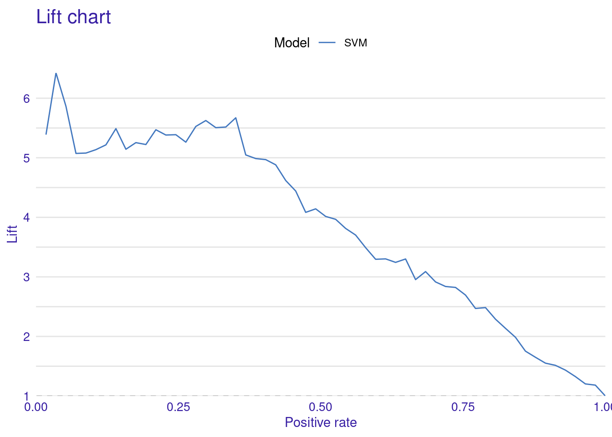
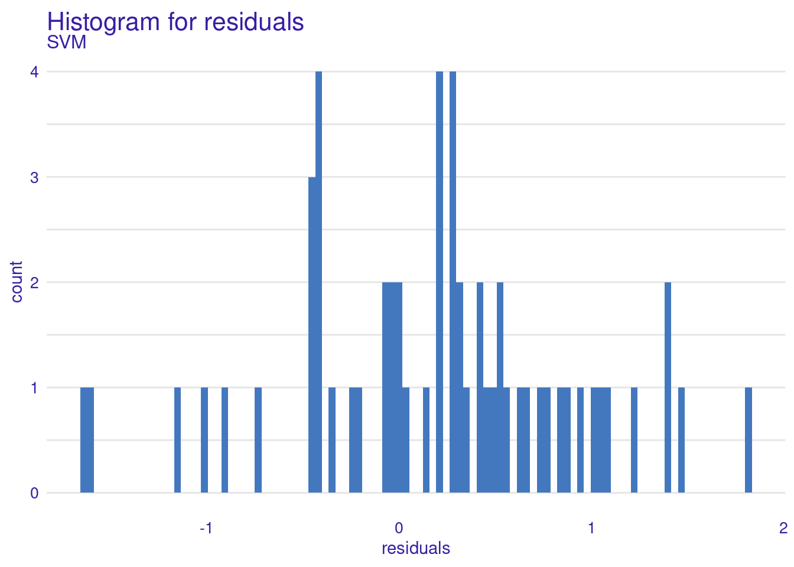
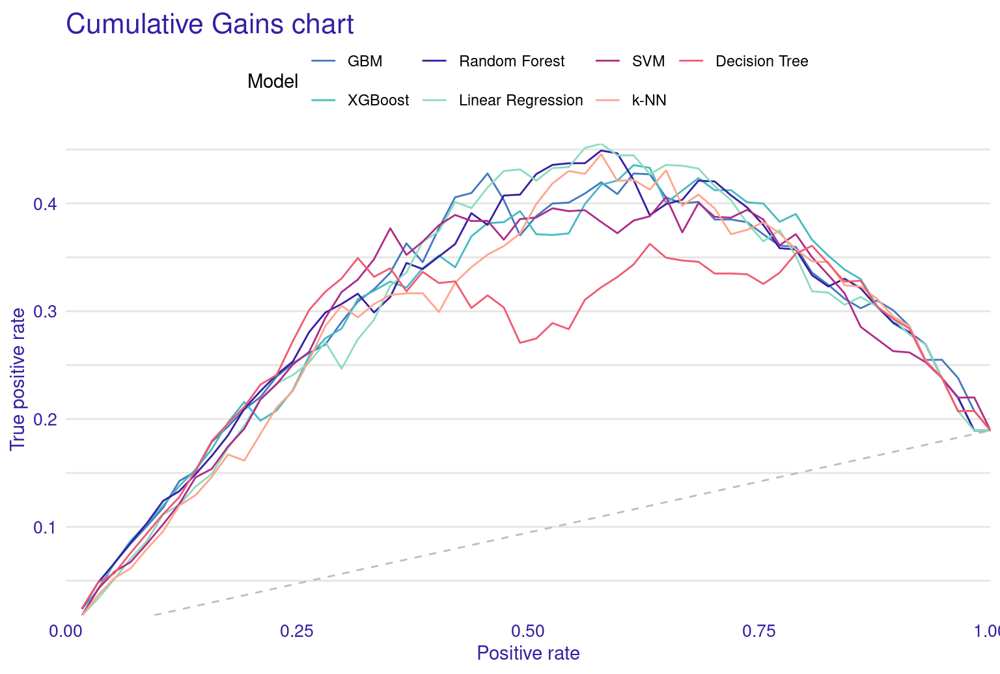
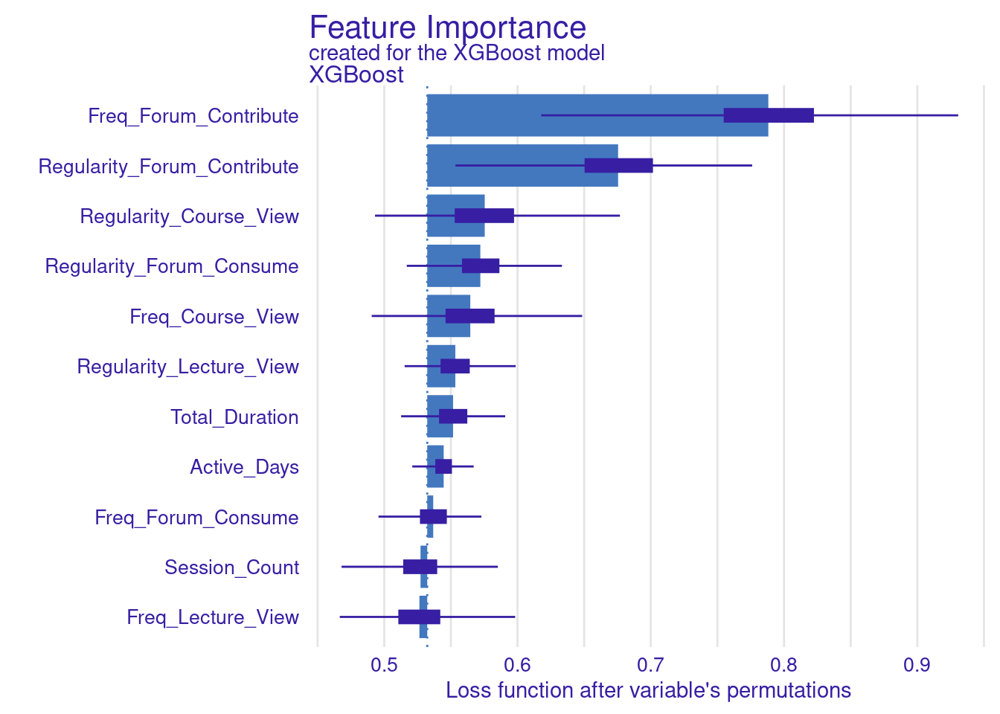
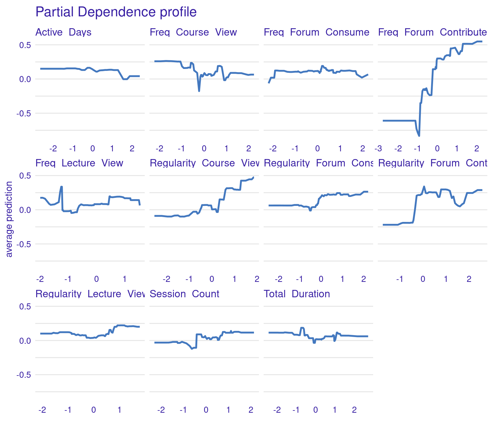
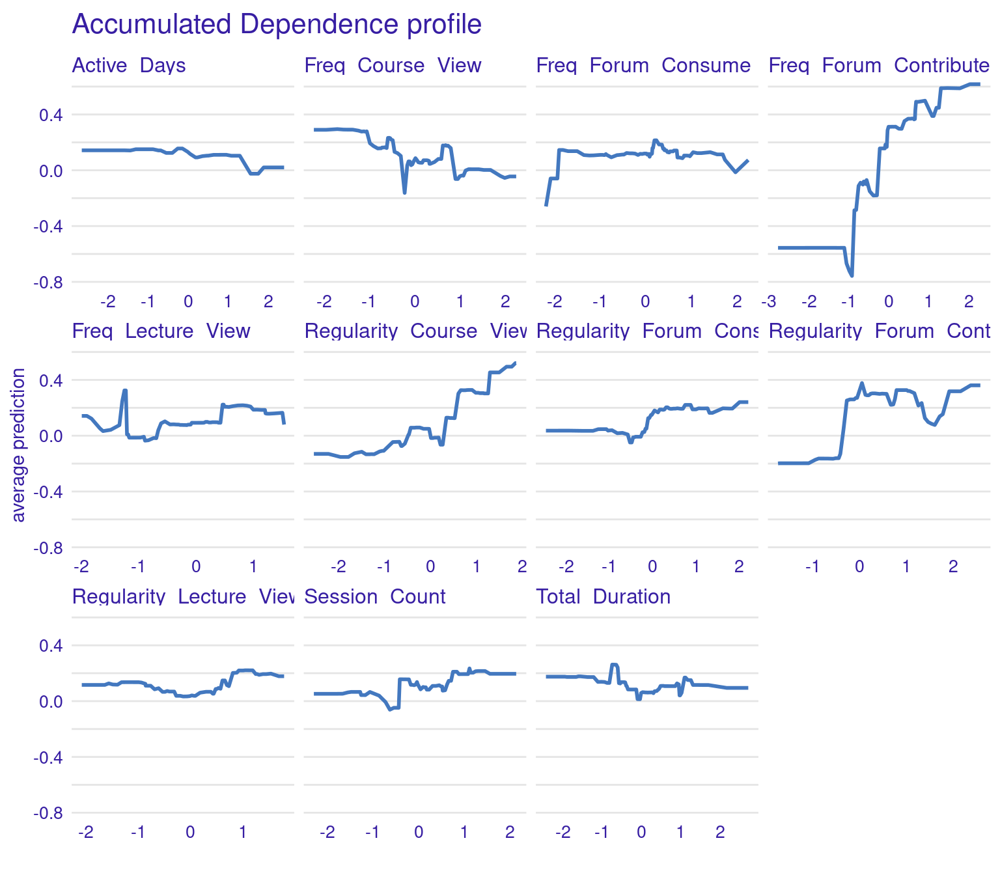
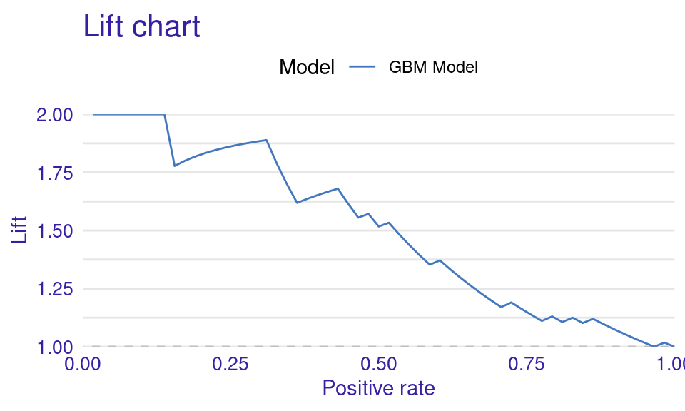
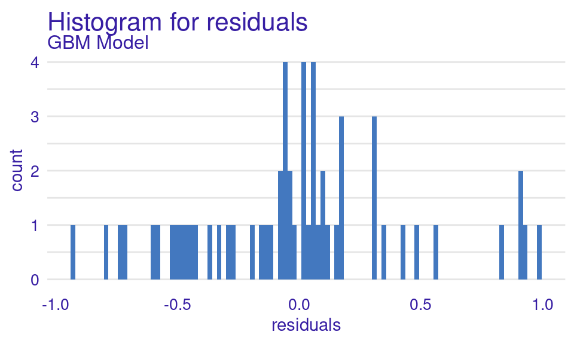

set.seed(50)
# Load necessary libraries
library(tidyverse)
library(rsample)
library(e1071)
library(DALEX)
library(rio)
# Import the data
student_data <- import("https://github.com/lamethods/data2/raw/main/lms/lms.csv")
# Standardize the numeric columns
student_data_standardized <- student_data |>
mutate(across(where(is.numeric), ~scale(.) |> as.vector()))
# Split the data into training and testing sets
data_split <- initial_split(student_data_standardized, prop = 0.8)
train_data <- training(data_split)
test_data <- testing(data_split)
# Define the formula to specify the relationship between the target variable
# and the predictor variables
formula <- Final_Grade ~ Freq_Course_View + Freq_Lecture_View +
Freq_Forum_Consume + Freq_Forum_Contribute + Regularity_Course_View +
Regularity_Lecture_View + Regularity_Forum_Consume +
Regularity_Forum_Contribute + Session_Count + Total_Duration + Active_Days
# Fit the SVM model
svm_fit <- svm(formula,
data = train_data,
kernel = "radial")6 Explainable Artificial Intelligence in Education: A Tutorial for Identifying the Variables that Matter
Abstract
Despite the potential of integrating machine learning (ML) and artificial intelligence capabilities into educational settings, there are several challenges that hamper their widespread use and adoption. Among these challenges is that these technologies often function as an “opaque-box” models. This lack of transparency can undermine trust, fairness, and accountability. To address this, explainability methods are essential for understanding how models, e.g., predict at-risk students, grade essays, or identify plagiarism. This chapter demonstrates the use of several techniques to explain ML models in educational contexts through a tutorial covering both regression (predicting student grades) and classification (identifying high versus low achievers). We describe how variable-importance measures, partial dependence plots, and accumulated local effects may help educators interpret the outcomes of predictive models, increasing transparency and trust.
1 Introduction
Machine learning (ML) models and artificial intelligence (AI) applications are increasingly improving their performance and efficiency, often at the expense of becoming more complex [1]. A common drawback of complex models is that they often operate as “opaque boxes,” making it difficult to understand the grounds behind their decisions or predictions[1, 2]. This lack of transparency can be problematic, especially in critical applications where trust, fairness, and accountability are indispensable. In the context of education, we must understand how models predict student performance, recommend learning resources, or profile students according to their behavior [2–4]. Otherwise, without model transparency, there is a risk of reinforcing biases, misinterpreting student actions and abilities, or making unfair decisions about placements and interventions [1]. Explainability ensures that researchers, educators and administrators can trust AI outcomes and make informed decisions [2, 5].
Variable-importance measures hold significant value in ML explainability. They can transform models from opaque to white-box ones where the inner-workings are understandable, i.e., we can understand how variables explain the model results [6]. In our case that entails knowing which variables are more associated with students’ performance; in other words, what were the learning activities that students did so that they may score higher grades. Further, if we identify the variables that have little or no influence on model predictions, we can simplify our models by excluding irrelevant features. Moreover, model explainability allows us to assess the validity of a model against a theory or hypothesis or discover the factors that may be involved in affecting our outcome beyond our theoretical model. In doing so, explainability helps us to get actionable insights from the data, build informed decisions and expand our theoretical knowledge [6–8].
In this chapter, we provide a tutorial on ML explainability in the context of education using two examples. First, we describe a case study on regression using a well-known example: predicting students’ grades. Secondly, we describe the same procedure for classification. It is assumed that the reader is familiar with the R programming language. If that is not the case, it is recommended to refer to previous tutorials on the basics of R [9], data cleaning [10], basic statistics [11], visualization [12], and prediction [15].
2 Explainable AI in education
The use of explainable AI in educational research is not widespread but its is becoming increasingly prevalent. Studies often employ inherently interpretable algorithms, such as decision trees, to provide global explanations [6]. An example is the work by [16], who used logistic regression to predict factors that would allow to early predict dropout. Since this is not possible for less interpretable algorithms —which often yield higher accuracy— other studies rely on explainable AI to interpret the results of predictive models. For instance, Pellagatti et al. [17] used random forests to predict student dropout. The authors used variable importance to identify which features contributed the most to the predictions, and partial dependence plots to assess how variations in these features influenced the results. Saqr & López-Pernas [2] predicted students’ grades using several algorithms and examined the explainability of each model, the most important variables (variable importance) and how they contributed to the predicted grade (partial dependence plot). The authors also used Shapley Additive explanations to visualize the distribution of contribution for each feature to the predictions across students. In a similar study, used Tiukhova et al. [18] Shapley Additive explanations to explore the stability of the most important features that predict student success in a Naïve Bayes predictive model. Please, refer to Chapter 2 in this book for an in-depth explanation of xAI [1].
3 A tutorial on global xAI explainability using DALEX
In this section, we provide a tutorial on ML explainability in the context of education using two examples. First, we describe a case study on regression using a well-known example: predicting students’ grades. Secondly, we describe the same procedure for classification. The general workflow followed in each of the examples is the usual ML pipeline, depicted in Figure 11.4, enhanced with the xAI techniques.

3.1 DALEX for student grade prediction
For our first example, we use a opaque box model and we show how it can be explained (i.e., white-boxed) using the DALEX (Descriptive mAchine Learning EXplanations) approach [19]. We demonstrate the process of building and evaluating a Support Vector Machine (SVM) regression model using the kernlab engine and analyzing its performance. The estimation follows what we have learned in the previous chapters e.g., [14, 15] to create a predictive model. Briefly, we start by loading the necessary libraries and importing the student data as we mentioned before, the data is based on the study [20] and have been briefly explained in [14] and represent students’ engagement indicators e.g., reading lectures, time spent online etc. This corresponds to the exploratory data analysis (EDA) described in Figure 11.4–A.
In the following code, we performed the necessary steps for data preparation (Figure 11.4–B). We beging by standardizing the numeric columns to ensure all features are on the same scale. Then, we split the data into training and testing sets for model evaluation (Figure 11.4–C). Then, define the formula that specifies the relationship between the target variable (Final_Grade) and the predictor variables (engagement indicators). Finally, we fit the SVM model using the radial kernel on the training data (Figure 11.4–D).
In this time, we will not proceed to evaluate the model (Figure 11.4–E) using the traditional methods discussed in the previous chapters [14, 15], because DALEX has its own evaluation and explanation approach that makes this process easy and straightforward. Instead, we will create an explainer. An explainer is the first step in evaluating and explaining the model. Given that models create different output formats, an explainer standardizes model outputs making them uniform across different algorithms. In other words, the explainer object combines all the necessary components for evaluating a ML model (i.e., the model, the data, and the target variable) into a single uniform object. Whether comparing multiple models or analyzing a single model over different datasets, the explainer provides a standardized way to approach these tasks. Further, when we create the explainer object, it gives us access to the full potential of the DALEX capabilities and access to an extensive suite of diagnostic tools. These tools include variable importance measures, partial dependence plots, accumulated local effects plots, break down plots, SHAP values, ceteris paribus profiles, and more.
Creating an explainer is a straightforward process. We use the explain function with a few arguments. The first argument is the model, where we pass the svm_fit object representing the trained SVM regression model. The data argument specifies the holdout dataset which will be used for evaluating the model (test_data) excluding the target variable Final_Grade. The y argument tells DALEX what is the target variable that we are predicting and we specify that by passing the target variable (test_data$Final_Grade). The next arguments are optional, the label argument assigns a readable label to the explainer object which will be helpful in identifying the model in plots and summaries, especially when working with multiple models. The verbose argument specifies the level of details of the function’s output. When verbose = FALSE, the function suppresses output messages.
set.seed(50)
library(DALEX)
# Create an explainer with DALEX
explainer_svm <- explain(
svm_fit,
data = test_data |> dplyr::select(-Final_Grade),
y = test_data$Final_Grade,
label = "SVM",
verbose = FALSE
)
print(explainer_svm)Model label: SVM
Model class: svm.formula,svm
Data head :
Freq_Course_View Freq_Forum_Consume Freq_Forum_Contribute Freq_Lecture_View
1 -1.4795970 -1.6037982 -1.476917 -0.1035753
2 0.3237727 0.9709293 2.284040 0.9374399
Regularity_Course_View Regularity_Lecture_View Regularity_Forum_Consume
1 -1.04549094 0.0204884 -0.7421165
2 0.08799424 -0.2511021 0.8384102
Regularity_Forum_Contribute Session_Count Total_Duration Active_Days
1 -1.3787562 -1.4299170 -1.8650048 -0.7372311
2 0.7258669 0.7089812 0.8587155 0.2254762Alternatively (in the alternative code chunk below), given that DALEX works also with tidymodels. The same result can be also achieved using this package, where we can specify the model, create a workflow and then, fit the model as we have seen in the previous chapters [14] and then create an explainer.
# Alternative code chunk
set.seed(50)
#Alternative model estimation for SVM
library(tidymodels)
# Define SVM model specification with a radial basis function kernel
svm_specification <- svm_rbf() |>
set_mode("regression") |>
set_engine("kernlab")
# Create the workflow. Combine the model specification with the formula
svm_workflow <- workflow() |>
add_model(svm_specification) |>
add_formula(formula)
# Fit the SVM model
svm_fit_tidy <- svm_workflow |>
parsnip::fit(data = train_data)
# Create an explainer with DALEX
explainer_svm_tidy <- explain(
svm_fit_tidy,
data = test_data |> dplyr::select(-Final_Grade),
y = test_data$Final_Grade,
label = "SVM",
verbose = FALSE)
# print(explainer_svm_tidy) # Uncomment to see the outputHaving created the explainer, we can use it with DALEX for a range of uses and, most importantly, for model explaining.
3.1.1 Model evaluation
DALEX offers an easy interface for calculating model performance. To evaluate a model, we simply call the function model_performance() which takes one argument, the explainer object (explainer_svm) which we created earlier. The model_performance() function calculates the performance metrics for the regression task: Mean Squared Error (MSE), Root Mean Squared Error (RMSE), R-squared (R²), and Mean Absolute Error (MAE). The result of this function call is assigned to a new object called model_performance_svm which we print to display the calculated performance metrics.
As the results show, The model’s performance is moderate, with an R² of about 0.41 meaning it captures some of the patterns in the data, but there is still a significant amount of unexplained variance. The RMSE of about 0.71 gives us an idea of the typical prediction errors (remember that the grades were scaled). The distribution of residuals suggests that the model’s errors are fairly balanced between over-predictions and under-predictions, which is good. However, there are some larger errors at the extremes (as seen in the 0% and 100% percentiles of the residuals).
set.seed(50)
# Calculate and print model performance metrics for the SVM model
model_performance_svm <- model_performance(explainer_svm)
print(model_performance_svm)Measures for: regression
mse : 0.5556946
rmse : 0.7454493
r2 : 0.4063128
mad : 0.4442718
Residuals:
0% 10% 20% 30% 40% 50%
-1.64093297 -0.58085583 -0.41026001 -0.07698939 0.07855870 0.28133263
60% 70% 80% 90% 100%
0.34303022 0.51622444 0.76114088 1.06787159 1.81745294 To visualize these metrics, we use DALEX to create several types of performance plots (Figure 6.2).
The Lift Curve demonstrates how well the model ranks predictions compared to random guessing; a higher curve indicates better performance. The curve starts with a brief dip near zero positive rate, indicating a small initial under-performance then rises sharply to a peak lift of about 4.5 at around 10% positive rate. This suggests the model is particularly effective at identifying the top 10% of most likely positive instances. From this peak, the curve gradually declines as the positive rate increases, maintaining a lift above 1 (random selection) for most of its range (i.e., continues to outperform random selection until very high positive rates.). The curve’s shape, starting high and slowly descending, is characteristic of a well-performing predictive model. This lift curve suggests that the SVM model has good discriminating power and could be particularly useful in scenarios where identifying the most likely positive cases is important.
The Residuals Boxplot visualizes the spread and outliers of residuals, ideally showing minimal outliers and a symmetric distribution around zero. The red dot represents the RMSE, a measure of the model’s average prediction error. Its position around 0.7-0.8, suggesting moderate prediction accuracy. Overall, this boxplot indicates that while the SVM model’s residuals are somewhat symmetrically distributed around zero, there is a slight tendency for the model to underpredict (positive residuals) more often than overpredict.
The Residuals Histogram provides a frequency distribution of residuals, ideally normal around zero. The residuals histogram reveals that most residuals are not very centered around zero. The histogram shows an asymmetrical distribution with more residuals on the positive side, suggesting a potential bias in the model where it tends to underpredict more frequently than overpredicting. The concentration is noticeable most at around 1, suggests a tendency for the model to underpredict grades.
The Cumulative Gain Chart shows the cumulative gain achieved by the model across percentiles, with curves above the diagonal suggesting better predictive power. Finally, the Empirical Cumulative Distribution Function (ECDF) plot illustrates the cumulative probability of residuals, helping to understand their distribution across values.
While visualizing model performance using plots can be beneficial, especially for comparing multiple models, interpreting single-model plots might be challenging. However, performance plots may not provide actionable insights to help tune the model or adjust data.
set.seed(50)
# Generate various model performance plots
plot(model_performance_svm, geom = "lift")
plot(model_performance_svm, geom = "gain")
plot(model_performance_svm, geom = "boxplot")
plot(model_performance_svm, geom = "histogram")
plot(model_performance_svm, geom = "ecdf")




3.1.2 Model explainability
The DALEX way of explaining models is built on Leo Breiman’s variable-importance measure for random forests [21]. The method uses permutation to assess the significance of explanatory variables. The algorithm changes a variable’s values several times and assesses the resulting impact on model performance. The greater the degradation in performance, the more important the variable is to the prediction task. These methods —while straightforward— offers an effective and robust method for model-agnostic explanations. In doing so, it can be applied to explain any model regardless of the model explainability.
To compute and visualize the importance of our SVM model, we use the model_parts function. model_parts is the main function for generating global (i.e., model level) model explanations (contrast those to local explanation in [22] ). The function accepts several arguments, but only one is required: the explainer object we previously created (explainer_svm). In its simplest form, you can call model_parts(explainer_svm), with all other options set to their default values. For instance, loss_function, is set by default to loss_root_mean_square indicating that the drop in RMSE will be used to measure the model’s performance.
We store the results of the model_parts in the vi_svm object which contains the calculated variable importance and then pass it to the plot function. Other arguments may need to be specified, for instance, the B argument (defaults to 10) controls the number of permutations used in the calculation, higher numbers (e.g., 500) are always recommended to increase the robustness of the results but may be computationally demanding. Also, the type argument can be specified to change the type of feature importance. By default ("raw"), provides raw drop loss values or "ratio" to return the ratio of drop loss to the full loss in model, while "difference" returns drop loss in the full model. As the results show (Figure 6.3), the most important variables are contributing to forums, regularity in course view, and in contributing to forums as well as session count and duration. These variables are consistent across all methods and they represent cognitive engagement (contributing to problem solving through forums) and time investment in the course, all are consistent with the hypothesis that cognitive engagement is more likely to result in higher achievement.
set.seed(50)
# Default model
vi_svm <- model_parts(explainer_svm)
plot(vi_svm)
# Same as before with all arguments specified
vi_svm <- model_parts(explainer_svm, loss_function = loss_root_mean_square,
B = 100)
plot(vi_svm)
# other variations: difference and ratio
vi_svm_difference <- model_parts(explainer_svm, loss_function = loss_root_mean_square,
B = 100, type = "difference")
plot(vi_svm_difference)
vi_svm_ratio <- model_parts(explainer_svm, loss_function = loss_root_mean_square,
B = 100, type = "ratio")
plot(vi_svm_ratio)


3.1.2.1 Creating Custom Loss Functions for DALEX
Whereas the default is loss function in DALEX is based on RMSE, we can also use different metrics to assess the model loss. In the next code chunk, we show how to build two custom functions. These custom functions are used to compute variable importance for the SVM model. In particular, we build two custom loss functions: one for MAE, which calculates the mean of absolute differences between observed and predicted values, and another for MAD, which computes the median of these absolute differences. The results are visualized by creating plots for the MAE-based and MAD-based variable importance (Figure 6.4). The choice of loss function can significantly impact the interpretation of variable importance, so researchers need to select a function that aligns with the data and analysis goals.
set.seed(50)
# Load necessary libraries
library(DALEX)
library(ggplot2)
# Define the custom MAE loss function
loss_mae <- function(observed, predicted) {
# Compute the Mean Absolute Error
mean(abs(observed - predicted))
}
# Define the custom MAD loss function
loss_mad <- function(observed, predicted) {
# Compute the Median Absolute Deviation
median(abs(observed - predicted))
#mean(abs(predicted - median(predicted))) another version
}
# Compute variable importance using the custom MAE loss function
vi_svm_mae <- model_parts(explainer_svm, loss_function = loss_mae)
# Compute variable importance using the custom MAD loss function
vi_svm_mad <- model_parts(explainer_svm, loss_function = loss_mad)
# Plot the results for MAE
plot(vi_svm_mae)
# Plot the results for MAD
plot(vi_svm_mad)

3.1.3 Model selection: creating and evaluating several ML models
We have previously explored how to estimate, evaluate, and explain a single ML model. However, explainability techniques allow us to make an informed decision about the most suitable model beyond simple performance metrics. To showcase this potential, we will estimate several ML models, evaluate their performance, and then select and explain the best-performing model. Since we have already covered the detailed process of estimating multiple ML models in the previous chapters [14, 15], we will not revisit that process in depth. The following code estimates seven models:
- Linear Regression: Fits a linear model to our data using the
lmfunction available in base R. - Decision Tree: Implements a decision tree model suitable for regression tasks with the
rpartpackage [23]. - Random Forest: Builds a forest model using the
randomForestpackage [24]. - Support Vector Machine: Estimates a support vector machine model using the
svmfunction of thee1071package [25]. - K-Nearest Neighbors: Estimates a k-nearest neighbors model via the
kNNfunction [26]. - Gradient Boosting: Introduces gradient boosting with the
gbmpackage [27]. - XGBoost: Trains an efficient and scalable version of gradient boosting with the
xgboostpackage [28].
For the XGBoost model, a special approach is required. First, we convert our data into matrix format using model.matrix, excluding the first column to avoid the dummy variable. We then create train_matrix and test_matrix for our training and test sets and extract the target variable into train_label. Finally, the xgboost function is used to train the model.
set.seed(50)
# Load necessary packages
library(tidyverse)
library(caret)
library(rpart)
library(randomForest)
library(e1071)
library(kknn)
library(gbm)
library(xgboost)
library(DALEX)
# Linear Regression
linear_model <- lm(formula, data = train_data)
# Decision Tree
decision_tree_model <- rpart(formula, data = train_data, method = "anova")
# Random Forest
random_forest_model <- randomForest(formula, data = train_data, ntree = 100)
# Support Vector Machine
svm_model <- svm(formula, data = train_data)
# k-Nearest Neighbors
knn_model <- train(formula, data = train_data, method = "kknn", tuneLength = 5)
# Gradient Boosting Machine
gbm_model <- gbm(formula, data = train_data, distribution = "gaussian",
n.trees = 100, interaction.depth = 3, shrinkage = 0.1, cv.folds = 5)
# XGBoost
train_matrix <- model.matrix(formula, data = train_data)[,c(-1)]
test_matrix <- model.matrix(formula, data = test_data)[,c(-1)]
train_label <- train_data$Final_Grade
xgboost_model <- xgboost(data = train_matrix, label = train_label, nrounds = 100,
objective = "reg:squarederror", verbose = 0)3.1.4 Multiple models
3.1.4.1 Creating multiple explainers
In our previous step, we constructed several ML models. To understand how each model makes predictions, we need to create an explainer for each model. We do so using the explain function to generate these explainers in the same way we did before. We begin by specifying the model, the test data (excluding the target variable Final_Grade), and a descriptive label to identify the model when multiple models are visualized or compared.
The below code creates an explainer_linear for the linear regression model using the test data without the Final_Grade column, and set a label indicating "Linear Regression". We then replicate this process for the decision tree, random forest, SVM, k-nearest neighbors, gradient boosting, and XGBoost models, creating respective explainers for each. For XGBoost, we use the pre-created test data matrix, the XGBoost model, test data matrix. Finally, we use the print function to provide summary information about the explainer and allow us to verify its correct configuration.
set.seed(50)
# Create `DALEX`explainers
explainer_linear <- explain(
model = linear_model, y = test_data$Final_Grade,
data = dplyr::select(test_data, -Final_Grade),
label = "Linear Regression", verbose = FALSE
)
explainer_decision_tree <- explain(
model = decision_tree_model, y = test_data$Final_Grade,
data = dplyr::select(test_data, -Final_Grade),
label = "Decision Tree", verbose = FALSE
)
explainer_random_forest <- explain(
model = random_forest_model, y = test_data$Final_Grade,
data = dplyr::select(test_data, -Final_Grade),
label = "Random Forest", verbose = FALSE
)
explainer_svm <- explain(
model = svm_model, y = test_data$Final_Grade,
data = dplyr::select(test_data, -Final_Grade),
label = "SVM", verbose = FALSE
)
explainer_knn <- explain(
model = knn_model$finalModel, y = test_data$Final_Grade,
data = dplyr::select(test_data, -Final_Grade),
label = "k-NN", verbose = FALSE
)
explainer_gbm <- explain(
model = gbm_model, y = test_data$Final_Grade,
data = dplyr::select(test_data, -Final_Grade),
label = "GBM", verbose = FALSE
)
explainer_xgboost <- explain(
model = xgboost_model, y = test_data$Final_Grade,
data = test_matrix, label = "XGBoost", verbose = FALSE
)3.1.4.2 Evaluation of multiple models
In the next step, we evaluate the performance of the multiple ML models (Figure 11.4–E). For each model of our models (linear regression, decision tree, random forest, support vector machine, k-nearest neighbors, gradient boosting machine, and XGBoost), the code calculates performance metrics using the model_performance function. The process is simply a replication of what we have seen for the single model. The model_performance function then generates the performance metrics for each model. The performance metrics are then stored in separate variables for each model, allowing for easy comparison and analysis of how well each model performs on the given dataset. We extract and combine these metrics in a table for comparison (Table 6.1).
set.seed(50)
# Calculate performance metrics for each model
performance_linear <- model_performance(explainer_linear)
performance_decision_tree <- model_performance(explainer_decision_tree)
performance_random_forest <- model_performance(explainer_random_forest)
performance_svm <- model_performance(explainer_svm)
performance_knn <- model_performance(explainer_knn)
performance_gbm <- model_performance(explainer_gbm)
performance_xgboost <- model_performance(explainer_xgboost)
# Combine performance metrics into a single table
performance_metrics <- rbind(
`Linear Regression` = as.array(performance_linear$measure),
`Decision Tree` = performance_decision_tree$measures,
`Random Forest` = performance_random_forest$measures,
`SVM` = performance_svm$measures$r2,
`KNN` = performance_knn$measures,
`GBM` = performance_gbm$measures,
`XGBoost` = performance_xgboost$measures)
# Print the combined dataframe
print(performance_metrics)| Model | mse | rmse | r2 | mad |
|---|---|---|---|---|
| Linear Regression | 0.56 | 0.75 | 0.41 | 0.48 |
| Decision Tree | 0.63 | 0.79 | 0.33 | 0.48 |
| Random Forest | 0.51 | 0.71 | 0.46 | 0.42 |
| SVM | 0.41 | 0.41 | 0.41 | 0.41 |
| KNN | 0.57 | 0.75 | 0.39 | 0.54 |
| GBM | 0.49 | 0.70 | 0.47 | 0.42 |
| XGBoost | 0.50 | 0.71 | 0.46 | 0.39 |
The performance metrics for these models reveal interesting insights into their predictive capabilities. XGBoost emerges as the top performer, closely followed by Gradient Boosting Machine (GBM) and Random Forest. This pattern suggests that ensemble methods are good for this dataset, likely due to their ability to capture complex relationships and reduce overfitting. Interestingly, Linear Regression model performs rather well compared to the more complex algorithms like SVM and K-Nearest Neighbors (KNN). This suggests that while there are certainly non-linear aspects to the data, there are also significant linear relationships. The KNN model’s performance is somewhat moderate, with a high Mean Absolute Deviation (MAD). This could indicate that the model is sensitive to outliers although we performed feature scaling. It is clear that no single model dominates across all metrics. Moreover, the respectable performance of Linear Regression reminds us that simpler models shouldn’t be discounted, especially when interpretability is a concern. The plots of the model’s performance confirm these findings (Figure 6.5).
set.seed(50)
# Create combined plots
# Lift plot
plot(performance_linear, performance_decision_tree, performance_random_forest,
performance_svm, performance_knn, performance_gbm, performance_xgboost,
geom = "lift")
# Gain plot
plot(performance_linear, performance_decision_tree, performance_random_forest,
performance_svm, performance_knn, performance_gbm, performance_xgboost,
geom = "gain")
# Residuals plot
plot(performance_linear, performance_decision_tree, performance_random_forest,
performance_svm, performance_knn, performance_gbm, performance_xgboost,
geom = "boxplot"
)
# ecdf curve
plot(performance_linear, performance_decision_tree, performance_random_forest,
performance_svm, performance_knn, performance_gbm, performance_xgboost,
geom = "ecdf"
)
# histogram
plot(performance_linear, performance_decision_tree, performance_random_forest,
performance_svm, performance_knn, performance_gbm, performance_xgboost,
geom = "histogram"
) 



The lift plot shows a lot of overlap, same with the cumulative gain chart. Of course, we see some models perform well across some ranges but nothing consistent. The box plot of residuals show that XGBoost, GBM, and Random Forest have the best performance, with the smallest and most compact boxes, indicating lower and more consistent residuals. Their median lines (the vertical line inside each box) are closest to zero, suggesting more accurate predictions overall. The red dots represent the root mean square of residuals for each model, providing a single metric for comparison. These dots align well with the overall box plot distributions, confirming the relative performance of the models. Overall, this visualization reinforces the strengths of ensemble methods like XGBoost and GBM for this particular dataset. The reverse cumulative distribution plot offers a visual comparison of residual performance across the ML models. The graph’s leftward shift indicates better model performance, with XGBoost, GBM, and Random Forest as top performers, aligning with earlier metric analyses. Linear Regression and SVM show similar, middling performance, while k-NN and Decision Tree lag behind. The y-axis represents the percentage of predictions with residuals exceeding the x-axis value which gives an idea about the error distribution.
To conclude, it seems that XGBoost is the best performing model, and so we will demonstrate how to explain it using the same methods we learnt before.
3.1.4.3 Explaining the XGBoost model
The next step replicates what we have already done for the SVM model. The code computes and visualizes the important variables using the default and the custom loss functions. The variable importance is calculated three times: for RMSE (the default function), MAD, and MAE (the custom loss functions). We use the model_parts function with the explainer_xgboost to generate variable importance scores. The parameter B=500 indicates that 500 permutations are performed to assess importance. The results are stored in vi_xgboost, vi_xgboost_mad, and vi_xgboost_mae, corresponding to the different loss functions. Finally, these results are plotted with titles indicating the loss function used (Figure 6.6).
set.seed(50)
# Compute and plot variable importance using the custom RMSE loss function
vi_xgboost <- model_parts(explainer_xgboost, loss_function = loss_root_mean_square,
B=500, type = "ratio")
plot(vi_xgboost)
# Compute and plot variable importance using the custom MAD loss function
vi_xgboost_mad <- model_parts(explainer_xgboost, loss_function = loss_mad, B=500)
plot(vi_xgboost_mad)
# Compute and plot variable importance using the custom MAE loss function
vi_xgboost_mae <- model_parts(explainer_xgboost, loss_function = loss_mae,B=500)
plot(vi_xgboost_mae) 


3.1.5 Partial-dependence Profiles
Two types of plots can help explain impact of different engagement variables on students’ grades (Figure 11.4–F): Partial Dependence Plots (PDPs) and Accumulated Local Effects (ALE) plots. Both plots aim to illustrate how the predicted outcome (grades) changes in response to variations in specific predictor variables (such as engagement indicators), but they do so in slightly different ways, each with its own strengths.
3.1.5.1 Partial Dependence Plots (PDPs)
PDPs are designed to show the average effect of a single feature on the predicted outcome. This is useful for understanding the overall trend or relationship between a specific feature (e.g., frequency of forum contributions) and the outcome (grades). For instance, in the generated PDPs, you might observe that increasing the frequency of forum contributions has a positive impact on the predicted grades, indicating that students who participate more in forums tend to achieve higher grades. Conversely, a flat line in a PDP, such as the one you might see for the “active days” variable, suggests that changes in this feature do not significantly affect the outcome. In general, the regularity of activity often seems more impactful than raw frequency or duration. For instance, regularity of course and lecture viewing show positive associations with grade predictions. The PDPs can be generated by the code using model_profile and plot(pdp_xgboost) with the test data excluding the outcome variable.
3.1.5.2 Accumulated Local Effects (ALE) Plots
ALE plots offer a more refined alternative to PDPs, particularly when dealing with correlated features (Figure 6.7). Unlike PDPs, which show the average effect of a feature, ALE plots focus on the local changes in predictions as the feature varies. This approach accounts for the potential interactions between features and provides a more accurate interpretation when features are correlated. ALE can be created in the same way, but with the option type = "accumulated". This makes ALE plots particularly useful in complex educational datasets where many engagement variables might be interrelated.
# Partial Dependence Plots
pdp_xgboost <- model_profile(explainer_xgboost,
variables = colnames(test_data)[colnames(test_data) != "Final_Grade"])
plot(pdp_xgboost) + labs(subtitle = "")
# Accumulated Local Effects (ALE) Plots
ale_xgboost <- model_profile(explainer_xgboost, type = "accumulated",
variables = colnames(test_data)[colnames(test_data) != "Final_Grade"])
plot(ale_xgboost) + labs(subtitle = "")

The ALE plots might show that, even after accounting for other correlated behaviors, frequent contributions to forums still have a significant positive effect on grades, reinforcing the importance of this type of engagement. PDPs and ALEs can also be plotted while clustering the data (Figure 6.8). For instance the k=3 argument in the code specifies that the feature values should be divided into three clusters for calculating Accumulated Local Effects (ALE). This means that the ALE plots will show how the predicted outcome changes as the feature varies within each of these three clusters, providing a view of the heterogeneity of predictor outcome effect.
# Accumulated Local Effects (ALE) Plots
ale_xgboost <- model_profile(explainer_xgboost, type = "accumulated",
variables = colnames(test_data)[colnames(test_data) != "Final_Grade"],
k = 3)
plot(ale_xgboost) + labs(subtitle = "")
3.2 Explaining a classification model
Explaining a classification model goes almost the same way as regression with the necessary modifications, e.g., specifying the correct target. The next code estimates a Gradient Boost Model (GBM) in the same way we explained before in the classification chapter. The code begins by loading the necessary libraries, setting a random seed is set to ensure consistent results. Data is imported from a CSV file, and a new binary classification variable, Achievement, is created based on whether a student’s Final_Grade is above or below the median (top 50% of achievement level). The Achievement variable is then converted to numeric format to be suitable for model training (Figure 11.4–B). The dataset is split into training and testing sets (Figure 11.4–C), with 80% allocated for training while ensuring class distribution is preserved. Finally, a GBM model is fitted using the engagement predictors to estimate the binary outcome (Figure 11.4–D). The model is configured with a Bernoulli distribution for binary classification, 1000 trees, a tree depth of 3, a learning rate of 0.01, and a bagging fraction of 0.7. These values are chosen for demonstration.
# Load necessary libraries
library(gbm)
library(rio)
library(dplyr)
library(caret)
library(DALEX)
library(rsample)
# Set seed for reproducibility
set.seed(50)
# Load data
student_data <- import("../student_data.csv")
# Create binary classification target variable
student_data <- student_data |>
mutate(Achievement = ifelse(Final_Grade > median(Final_Grade),
"High_Achievers", "Low_Achievers")) |>
mutate(Achievement = factor(Achievement,
levels = c("High_Achievers", "Low_Achievers")))
# Convert target to numeric for model fitting
student_data$Achievement_numeric <- as.numeric(student_data$Achievement) - 1
# Split data into training and testing sets
data_split <- initial_split(student_data, prop = 0.8, strata = Achievement_numeric)
train_data <- training(data_split)
test_data <- testing(data_split)
# Fit GBM model
gbm_model <- gbm(
Achievement_numeric ~ Freq_Course_View + Freq_Lecture_View + Freq_Forum_Consume +
Freq_Forum_Contribute + Regularity_Course_View + Regularity_Lecture_View +
Regularity_Forum_Consume + Regularity_Forum_Contribute +
Session_Count + Total_Duration + Active_Days,
data = train_data,
distribution = "bernoulli", # For binary classification
n.trees = 1000,
interaction.depth = 3,
shrinkage = 0.01,
bag.fraction = 0.7
)Similar to what we did before, we create an explainer for the fitted Gradient Boosting Model (GBM). The explain function takes the estimated gbm_model and the test data (excluding the target variable and the final grade). The explainer is labeled as “GBM Model” for identification. Subsequently, the model’s performance is assessed using the model_performance function, which computes the classification performance metrics (Figure 11.4–E) based on the explainer object. The results are then printed out to provide insights into how well the GBM model performs on the test data.
# Create `DALEX` explainer
explainer_gbm <- explain(
model = gbm_model,
data = test_data[, 1:11],
y = test_data$Achievement_numeric,
label = "GBM Model"
)Preparation of a new explainer is initiated
-> model label : GBM Model
-> data : 58 rows 11 cols
-> target variable : 58 values
-> predict function : yhat.gbm will be used ( default )
-> predicted values : No value for predict function target column. ( default )
-> model_info : package gbm , ver. 2.2.2 , task classification ( default )
-> predicted values : numerical, min = 0.01791613 , mean = 0.5135735 , max = 0.9899749
-> residual function : difference between y and yhat ( default )
-> residuals : numerical, min = -0.9362661 , mean = -0.01357354 , max = 0.9794141
A new explainer has been created! # Model performance
model_performance_gbm <- model_performance(explainer_gbm)
print(model_performance_gbm)Measures for: classification
recall : 0.7931034
precision : 0.7666667
f1 : 0.779661
accuracy : 0.7758621
auc : 0.8133175
Residuals:
0% 10% 20% 30% 40% 50%
-0.936266132 -0.537579796 -0.400499445 -0.149711621 -0.054921553 -0.003945525
60% 70% 80% 90% 100%
0.051416919 0.101556426 0.251119244 0.505825858 0.979414109 - The recall of 79.31% means that the model correctly identifies 79.31% of the low achievers, showing strong sensitivity in detecting students who might struggle.
- The precision of 76.67% shows that, out of all the students predicted to be low achievers, 76.67% were correctly classified, highlighting the model’s reliability.
- The F1-score of 77.97%, which balances both recall and precision, suggests the model performs well in identifying low achievers overall.
- The accuracy of 77.59% indicates that the model correctly classifies 77.59% of all students, whether they are high or low achievers.
- The AUC of 81.33% further confirms the model’s ability to effectively distinguish between low and high achievers, with a score over 80% generally indicating strong performance.
We can also visualize the results by using the plot function with the model_performance_gbm object and specifying the desired geometry (geom). The resulting plots (Figure 6.9) show that the ROC curve is well above the diagonal (the dashed line), indicating good model performance with high true positive rates even at low false positive rates, suggesting strong discriminating power. The residuals boxplot is fairly symmetrical around the zero line, which is favorable. The lift curve starts high (around 2) and gradually decreases, remaining above 1 throughout, meaning the model consistently outperforms random selection in identifying positive cases. The cumulative gain chart rises steeply at first and then flattens, significantly outperforming the diagonal baseline, indicating that the model effectively identifies a large proportion of positive cases early in its ranked predictions. The precision-recall curve shows high precision at low recall values, followed by a gradual decline as recall increases, suggesting a trade-off between precision and recall. The residuals histogram distribution is roughly symmetrical and centered near zero, which is desirable, with some outliers. Lastly, the empirical cumulative distribution curve indicates that a large proportion of residuals are concentrated around zero, with relatively few extreme values.
# Create individual plots
plot(model_performance_gbm, geom = "roc")
plot(model_performance_gbm, geom = "boxplot")
plot(model_performance_gbm, geom = "lift")
plot(model_performance_gbm, geom = "gain")
plot(model_performance_gbm, geom = "prc")
plot(model_performance_gbm, geom = "histogram")
plot(model_performance_gbm, geom = "ecdf")






Explaining the model (Figure 11.4–F) is performed in the same way we did before, we use the model_parts function with the explainer object explainer_gbm. The only parameter we pass is the number of permutations B = 500 to make the results more robust. The default method computes variable importance using the AUC loss function which measures how much the AUC would decrease if that variable were removed from the model. We see that the forum contribute variables (frequency and regularity) as well as session count are the variables with most importance (Figure 6.10).
# Variable importance with AUC loss
vi_gbm <- model_parts(explainer_gbm, B = 500)
plot(vi_gbm)
While standard metrics like AUC are useful, sometimes you may want to evaluate the model using custom loss functions that better align with your specific goals (Figure 6.11). Here, we define two custom loss functions: loss_logloss, which computes the logarithmic loss (or logloss), and loss_f1_score, which is based on the F1 score.
Logarithmic Loss (Logloss): This function measures how well the predicted probabilities match the actual outcomes. Lower values indicate better performance.
F1 Score: The F1 score balances precision and recall, especially important when dealing with imbalanced datasets. Here, we invert the F1 score so that lower values represent better performance, aligning with the convention used by
model_parts.
# Custom loss functions (same as in the previous code)}
loss_logloss <- function(observed, predicted) {
-mean(observed * log(predicted) + (1 - observed) * log(1 - predicted))
}
loss_f1_score <- function(observed, predicted) {
predicted_class <- ifelse(predicted > 0.5, 1, 0)
TP <- sum(observed == 1 & predicted_class == 1)
FP <- sum(observed == 0 & predicted_class == 1)
FN <- sum(observed == 1 & predicted_class == 0)
F1 <- 2 * TP / (2 * TP + FP + FN)
return(1 - F1) # return 1 - F1 to keep lower values better
}
# Variable importance with custom loss functions
vi_gbm_logloss <- model_parts(explainer_gbm, loss_function = loss_logloss,
B = 500, type = "ratio")
plot(vi_gbm_logloss)
vi_gbm_f1 <- model_parts(explainer_gbm, loss_function = loss_f1_score, B = 500)
plot(vi_gbm_f1)
vi_gbm_default <- model_parts(explainer_gbm, B = 500)
plot(vi_gbm_default)


We can also generate the PDP and ALE plots for the GBM model (Figure 6.12)
# Partial Dependence Plots (PDP)
pdp_gbm <- model_profile(
explainer_gbm,
variables = colnames(test_data[, 1:11])
)
plot(pdp_gbm) + labs(subtitle = "")
# Accumulated Local Effects (ALE) Plots
ale_gbm <- model_profile(
explainer_gbm,
type = "accumulated",
variables = colnames(test_data[, 1:11])
)
plot(ale_gbm) + labs(subtitle = "")

4 Discussion and conclusions
In this chapter, we went through a tutorial of xAI. In particular, we demonstrated various techniques for making the inner workings of machine learning models clear and transparent. In doing so, we can understand and reveal the variables that significantly influence student outcomes, whether predicting grades or identifying at-risk learners. We demonstrated several variable importance measures, partial dependence plots, and accumulated local effects. This transparency is very important for ensuring fairness, accountability, and the effective implementation of AI in educational settings, empowering stakeholders to make informed decisions and build a deeper understanding of the underlying learning processes. Most importantly, with transparency comes trust and reliance. If the stake holders understand the inner workings of an algorithm, they will be fast to implement it and adopt such methods in their institutions [29].
However, while xAI provides a powerful lens for understanding model behavior, it is essential to acknowledge its inherent limitations and the important role of human interpretation [2, 5, 30]. As our results suggest, even detailed explanations of individual algorithmic decisions might fall short when it comes to achieving genuine personalization or providing truly individualized support. Furthermore, instances where algorithms rely on seemingly “wrong predictors” to generate explanations highlight the potential pitfalls of a purely data-driven approach [2]. This underscores that while AI can offer valuable insights and identify patterns, it cannot and must not operate in isolation.
As such we can say that the effectiveness of AI in education hinges on a collaborative approach where human expertise and contextual understanding complement the analytical power of algorithms [2]. The ability to interpret explanations, identify potential biases or limitations, and integrate domain knowledge remains paramount, for a more detailed discussion please refer to the second chapter of this book[1].
References
1.
López-Pernas S, Oliveira E, Song Y, Saqr M (2025) AI, explainable AI and evaluative AI: An introduction to informed data-driven decision-making in education. In: Saqr M, López-Pernas S (eds) Advanced learning analytics methods: AI, precision and complexity. Springer Nature Switzerland, Cham
2.
Saqr M, López-Pernas S (2024) Why explainable AI may not be enough: Predictions and mispredictions in decision making in education. Smart Learn Environ. https://doi.org/10.1186/s40561-024-00343-4
3.
Sghir N, Adadi A, Lahmer M (2023) Recent advances in predictive learning analytics: A decade systematic review (2012–2022). Education and information technologies 28:8299–8333
4.
Na KS, Tasir Z (2017) A systematic review of learning analytics intervention contributing to student success in online learning. In: 2017 international conference on learning and teaching in computing and engineering (LaTICE). IEEE, pp 62–68
5.
Saqr M, Cheng R, López-Pernas S, Beck ED (2024) Idiographic artificial intelligence to explain students’ self-regulation: Toward precision education. Learning and Individual Differences 114:102499. https://doi.org/10.1016/j.lindif.2024.102499
6.
Khosravi H, Shum SB, Chen G, Conati C, Tsai Y-S, Kay J, Knight S, Martinez-Maldonado R, Sadiq S, Gašević D (2022) Explainable artificial intelligence in education. Computers and Education: Artificial Intelligence 3:100074
7.
Alyahyan E, Düştegör D (2020) Predicting academic success in higher education: Literature review and best practices. International Journal of Educational Technology in Higher Education 17:3
8.
Biecek P, Burzykowski T (2021) Explanatory model analysis: Explore, explain, and examine predictive models, 1st ed. Chapman & Hall/CRC, Philadelphia, PA
9.
Tikka S, Kopra J, Heinäniemi M, López-Pernas S, Saqr M (2024) Getting started with R for education research. In: Saqr M, López-Pernas S (eds) Learning analytics methods and tutorials: A practical guide using r. Springer, pp in–press
10.
Kopra J, Tikka S, Heinäniemi M, López-Pernas S, Saqr M (2024) An R approach to data cleaning and wrangling for education research. In: Saqr M, López-Pernas S (eds) Learning analytics methods and tutorials: A practical guide using r. Springer, pp in–press
11.
Tikka S, Kopra J, Heinäniemi M, López-Pernas S, Saqr M (2024) Introductory statistics with R for educational researchers. In: Saqr M, López-Pernas S (eds) Learning analytics methods and tutorials: A practical guide using r. Springer, pp in–press
12.
López-Pernas S, Misiejuk K, Tikka S, Kopra J, Heinäniemi M, Saqr M (2024) Visualizing and reporting educational data with R. In: Learning analytics methods and tutorials. Springer Nature Switzerland, Cham, pp 151–194
13.
Jovanovic J, López-Pernas S, Saqr M (2024) Predictive modelling in learning analytics: A machine learning approach in r. In: Learning analytics methods and tutorials: A practical guide using r. Springer Nature Switzerland Cham, pp 197–229
14.
Saqr M, Misiejuk K, Tikka S, López-Pernas S (2025) Artificial intelligence: Using machine learning to predict students’ performance. In: Saqr M, López-Pernas S (eds) Advanced learning analytics methods: AI, precision and complexity. Springer Nature Switzerland, Cham
15.
Saqr M, Misiejuk K, Tikka S, López-Pernas S (2025) Artificial intelligence: Using machine learning to classify students and predict low achievers. In: Saqr M, López-Pernas S (eds) Advanced learning analytics methods: AI, precision and complexity. Springer Nature Switzerland, Cham
16.
López-Pernas S, Kleimola R, Väisänen S, Hirsto L (2022) Early detection of dropout factors in vocational education: A large-scale case study from finland. In: Proceedings of the 1st finnish learning analytics and artificial intelligence in education conference (FLAIEC22)
17.
Pellagatti M, Masci C, Ieva F, Paganoni AM (2021) Generalized mixed‐effects random forest: A flexible approach to predict university student dropout. Statistical analysis and data mining 14:241–257
18.
Tiukhova E, Vemuri P, Flores NL, Islind AS, Óskarsdóttir M, Poelmans S, Baesens B, Snoeck M (2024) Explainable learning analytics: Assessing the stability of student success prediction models by means of explainable AI. Decision support systems 182:114229
19.
Biecek P (2018) DALEX: Explainers for complex predictive models in r. Journal of Machine Learning Research 19:1–5
20.
Saqr M, Jovanovic J, Viberg O, Gašević D (2022) Is there order in the mess? A single paper meta-analysis approach to identification of predictors of success in learning analytics. Studies in Higher Education 47:2370–2391. https://doi.org/10.1080/03075079.2022.2061450
21.
Breiman L (2001) Random forests. Mach Learn 45:5–32. https://doi.org/10.1023/A:1010933404324
22.
Saqr M, López-Pernas S (2025) Individualized explainable artificial intelligence: A tutorial for identifying local and individual predictions. In: Saqr M, López-Pernas S (eds) Advanced learning analytics methods: AI, precision and complexity. Springer Nature Switzerland, Cham
23.
Therneau T, Atkinson B (2022) Rpart: Recursive partitioning and regression trees
24.
Liaw A, Wiener M (2002) Classification and regression by randomForest. R News 2:18–22
25.
Meyer D, Dimitriadou E, Hornik K, Weingessel A, Leisch F (2023) e1071: Misc functions of the department of statistics, probability theory group (formerly: E1071), TU wien
26.
Schliep K, Hechenbichler K (2016) Kknn: Weighted k-nearest neighbors
27.
Ridgeway G, Developers G (2024) Gbm: Generalized boosted regression models
28.
Chen T, He T, Benesty M, Khotilovich V, Tang Y, Cho H, Chen K, Mitchell R, Cano I, Zhou T, Li M, Xie J, Lin M, Geng Y, Li Y, Yuan J (2024) Xgboost: Extreme gradient boosting
29.
Mustafa MY, Tlili A, Lampropoulos G, Huang R, Jandrić P, Zhao J, Salha S, Xu L, Panda S, Kinshuk, López-Pernas S, Saqr M (2024) A systematic review of literature reviews on artificial intelligence in education (AIED): a roadmap to a future research agenda. Smart Learning Environments 11: https://doi.org/10.1186/s40561-024-00350-5
30.
Ribeiro MT, Singh S, Guestrin C (2016) Why should I trust you?: Explaining the predictions of any classifier. In: Proceedings of the 22nd ACM SIGKDD international conference on knowledge discovery and data mining. ACM, New York, NY, USA